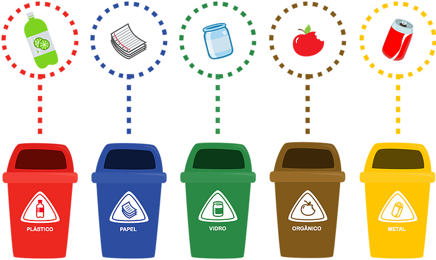

Por meio deste aplicativo, desejamos instruir a população contribuindo com a educação ambiental,
através
de
um projeto que busca integrar o desenvolvimento humano sustentável e o favorecimento da criação
de
mecanismos para a campanha pela educação e a sustentabilidade, orientar as pessoas em relação ao
descarte de
materiais e objetos que teriam o fim menos danoso ao meio ambiente se eles dispusessem de uma
ferramenta
que
orientasse o indivíduo a um local onde possui um descarte adequado.
